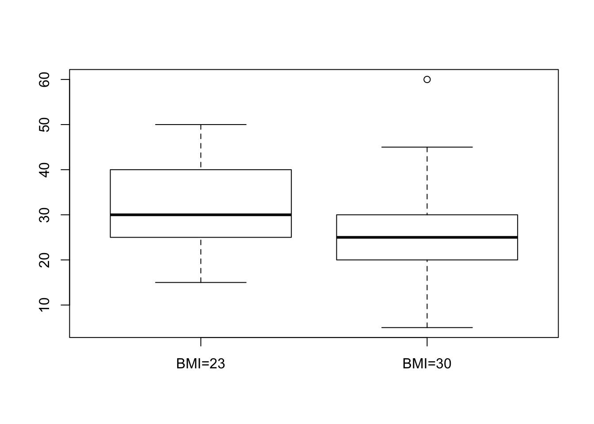

Chapter 16 Case Studies
16.1 Student Learning Objective
This chapter concludes this book. We start with a short review of the topics that were discussed in the second part of the book, the part that dealt with statistical inference. The main part of the chapter involves the statistical analysis of 2 case studies. The tools that will be used for the analysis are those that were discussed in the book. We close this chapter and this book with some concluding remarks. By the end of this chapter, the student should be able to:
Review the concepts and methods for statistical inference that were presented in the second part of the book.
Apply these methods to requirements of the analysis of real data.
Develop a resolve to learn more statistics.
16.2 A Review
The second part of the book dealt with statistical inference; the science of making general statement on an entire population on the basis of data from a sample. The basis for the statements are theoretical models that produce the sampling distribution. Procedures for making the inference are evaluated based on their properties in the context of this sampling distribution. Procedures with desirable properties are applied to the data. One may attach to the output of this application summaries that describe these theoretical properties.
In particular, we dealt with two forms of making inference. One form was estimation and the other was hypothesis testing. The goal in estimation is to determine the value of a parameter in the population. Point estimates or confidence intervals may be used in order to fulfill this goal. The properties of point estimators may be assessed using the mean square error (MSE) and the properties of the confidence interval may be assessed using the confidence level.
The target in hypotheses testing is to decide between two competing hypothesis. These hypotheses are formulated in terms of population parameters. The decision rule is called a statistical test and is constructed with the aid of a test statistic and a rejection region. The default hypothesis among the two, is rejected if the test statistic falls in the rejection region. The major property a test must possess is a bound on the probability of a Type I error, the probability of erroneously rejecting the null hypothesis. This restriction is called the significance level of the test. A test may also be assessed in terms of it’s statistical power, the probability of rightfully rejecting the null hypothesis.
Estimation and testing were applied in the context of single measurements and for the investigation of the relations between a pair of measurements. For single measurements we considered both numeric variables and factors. For numeric variables one may attempt to conduct inference on the expectation and/or the variance. For factors we considered the estimation of the probability of obtaining a level, or, more generally, the probability of the occurrence of an event.
We introduced statistical models that may be used to describe the relations between variables. One of the variables was designated as the response. The other variable, the explanatory variable, is identified as a variable which may affect the distribution of the response. Specifically, we considered numeric variables and factors that have two levels. If the explanatory variable is a factor with two levels then the analysis reduces to the comparison of two sub-populations, each one associated with a level. If the explanatory variable is numeric then a regression model may be applied, either linear or logistic regression, depending on the type of the response.
The foundations of statistical inference are the assumption that we make in the form of statistical models. These models attempt to reflect reality. However, one is advised to apply healthy skepticism when using the models. First, one should be aware what the assumptions are. Then one should ask oneself how reasonable are these assumption in the context of the specific analysis. Finally, one should check as much as one can the validity of the assumptions in light of the information at hand. It is useful to plot the data and compare the plot to the assumptions of the model.
16.3 Case Studies
Let us apply the methods that were introduced throughout the book to two examples of data analysis. Both examples are taken from the case studies of the Rice Virtual Lab in Statistics can be found in their Case Studies section. The analysis of these case studies may involve any of the tools that were described in the second part of the book (and some from the first part). It may be useful to read again Chapters 9–15 before reading the case studies.
16.3.1 Physicians’ Reactions to the Size of a Patient
Overweight and obesity is common in many of the developed contrives. In some cultures, obese individuals face discrimination in employment, education, and relationship contexts. The current research, conducted by Mikki Hebl and Jingping Xu87, examines physicians’ attitude toward overweight and obese patients in comparison to their attitude toward patients who are not overweight.
The experiment included a total of 122 primary care physicians affiliated with one of three major hospitals in the Texas Medical Center of Houston. These physicians were sent a packet containing a medical chart similar to the one they view upon seeing a patient. This chart portrayed a patient who was displaying symptoms of a migraine headache but was otherwise healthy. Two variables (the gender and the weight of the patient) were manipulated across six different versions of the medical charts. The weight of the patient, described in terms of Body Mass Index (BMI), was average (BMI = 23), overweight (BMI = 30), or obese (BMI = 36). Physicians were randomly assigned to receive one of the six charts, and were asked to look over the chart carefully and complete two medical forms. The first form asked physicians which of 42 tests they would recommend giving to the patient. The second form asked physicians to indicate how much time they believed they would spend with the patient, and to describe the reactions that they would have toward this patient.
In this presentation, only the question on how much time the physicians believed they would spend with the patient is analyzed. Although three patient weight conditions were used in the study (average, overweight, and obese) only the average and overweight conditions will be analyzed. Therefore, there are two levels of patient weight (average and overweight) and one dependent variable (time spent).
The data for the given collection of responses from 72 primary care
physicians is stored in the file “discriminate.csv”88. We start by
reading the content of the file into a data frame by the name
“patient†and presenting the summary of the variables:
patient <- read.csv("_data/discriminate.csv")
summary(patient)## weight time
## BMI=23:33 Min. : 5.00
## BMI=30:38 1st Qu.:20.00
## Median :30.00
## Mean :27.82
## 3rd Qu.:30.00
## Max. :60.00Observe that of the 72 “patients”, 38 are overweight and 33 have an average weight. The time spend with the patient, as predicted by physicians, is distributed between 5 minutes and 1 hour, with a average of 27.82 minutes and a median of 30 minutes.
It is a good practice to have a look at the data before doing the
analysis. In this examination on should see that the numbers make sense
and one should identify special features of the data. Even in this very
simple example we may want to have a look at the histogram of the
variable “time”:
hist(patient$time)A feature in this plot that catches attention is the fact that there is a high concventration of values in the interval between 25 and 30. Together with the fact that the median is equal to 30, one may suspect that, as a matter of fact, a large numeber of the values are actually equal to 30. Indeed, let us produce a table of the response:
table(patient$time)##
## 5 15 20 25 30 40 45 50 60
## 1 10 15 3 30 4 5 2 1Notice that 30 of the 72 physicians marked “30†as the time they
expect to spend with the patient. This is the middle value in the range,
and may just be the default value one marks if one just needs to
complete a form and do not really place much importance to the question
that was asked.
The goal of the analysis is to examine the relation between overweigh
and the Doctor’s response. The explanatory variable is a factor with two
levels. The response is numeric. A natural tool to use in order to test
this hypothesis is the \(t\)-test, which is implemented with the function
“t.test”.
First we plot the relation between the response and the explanatory variable and then we apply the test:
boxplot(time~weight,data=patient)
t.test(time~weight,data=patient)##
## Welch Two Sample t-test
##
## data: time by weight
## t = 2.8516, df = 67.174, p-value = 0.005774
## alternative hypothesis: true difference in means is not equal to 0
## 95 percent confidence interval:
## 1.988532 11.265056
## sample estimates:
## mean in group BMI=23 mean in group BMI=30
## 31.36364 24.73684Nothing seems problematic in the box plot. The two distributions, as they are reflected in the box plots, look fairly symmetric.
When we consider the report that produced by the function “t.test†we
may observe that the \(p\)-value is equal to 0.005774. This \(p\)-value is
computed in testing the null hypothesis that the expectation of the
response for both types of patients are equal against the two sided
alternative. Since the \(p\)-value is less than 0.05 we do reject the null
hypothesis.
The estimated value of the difference between the expectation of the response for a patient with BMI=23 and a patient with BMI=30 is \(31.36364 -24.73684 \approx 6.63\) minutes. The confidence interval is (approximately) equal to \([1.99, 11.27]\). Hence, it looks as if the physicians expect to spend more time with the average weight patients.
After analyzing the effect of the explanatory variable on the
expectation of the response one may want to examine the presence, or
lack thereof, of such effect on the variance of the response. Towards
that end, one may use the function “var.test”:
var.test(time~weight,data=patient)##
## F test to compare two variances
##
## data: time by weight
## F = 1.0443, num df = 32, denom df = 37, p-value = 0.8931
## alternative hypothesis: true ratio of variances is not equal to 1
## 95 percent confidence interval:
## 0.5333405 2.0797269
## sample estimates:
## ratio of variances
## 1.044316In this test we do not reject the null hypothesis that the two variances of the response are equal since the \(p\)-value is larger than \(0.05\). The sample variances are almost equal to each other (their ratio is \(1.044316\)), with a confidence interval for the ration that essentially ranges between 1/2 and 2.
The production of \(p\)-values and confidence intervals is just one aspect in the analysis of data. Another aspect, which typically is much more time consuming and requires experience and healthy skepticism is the examination of the assumptions that are used in order to produce the \(p\)-values and the confidence intervals. A clear violation of the assumptions may warn the statistician that perhaps the computed nominal quantities do not represent the actual statistical properties of the tools that were applied.
In this case, we have noticed the high concentration of the response at
the value “30”. What is the situation when we split the sample between
the two levels of the explanatory variable? Let us apply the function
“table†once more, this time with the explanatory variable included:
table(patient$time,patient$weight)##
## BMI=23 BMI=30
## 5 0 1
## 15 2 8
## 20 6 9
## 25 1 2
## 30 14 16
## 40 4 0
## 45 4 1
## 50 2 0
## 60 0 1Not surprisingly, there is still high concentration at that level
“30”. But one can see that only 2 of the responses of the “BMI=30”
group are above that value in comparison to a much more symmetric
distribution of responses for the other group.
The simulations of the significance level of the one-sample \(t\)-test for
an Exponential response that were conducted in Question \[ex:Testing.2\]
may cast some doubt on how trustworthy are nominal \(p\)-values of the
\(t\)-test when the measurements are skewed. The skewness of the response
for the group “BMI=30†is a reason to be worry.
We may consider a different test, which is more robust, in order to
validate the significance of our findings. For example, we may turn the
response into a factor by setting a level for values larger or equal to
“30†and a different level for values less than “30”. The relation
between the new response and the explanatory variable can be examined
with the function “prop.test”. We first plot and then test:
plot(factor(patient$time>=30)~weight,data=patient)prop.test(table(patient$time>=30,patient$weight))##
## 2-sample test for equality of proportions with continuity
## correction
##
## data: table(patient$time >= 30, patient$weight)
## X-squared = 3.7098, df = 1, p-value = 0.05409
## alternative hypothesis: two.sided
## 95 percent confidence interval:
## -0.515508798 -0.006658689
## sample estimates:
## prop 1 prop 2
## 0.3103448 0.5714286The mosaic plot presents the relation between the explanatory
variable and the new factor.
The level “TRUE†is associated with a value of the predicted time
spent with the patient being 30 minutes or more. The level “FALSE†is
associated with a prediction of less than 30 minutes.
The computed \(p\)-value is equal to \(0.05409\), that almost reaches the
significance level of 5%89. Notice that the probabilities that are
being estimated by the function are the probabilities of the level
“FALSE”. Overall, one may see the outcome of this test as supporting
evidence for the conclusion of the \(t\)-test. However, the \(p\)-value
provided by the \(t\)-test may over emphasize the evidence in the data for
a significant difference in the physician attitude towards overweight
patients.
16.3.2 Physical Strength and Job Performance
The next case study involves an attempt to develop a measure of physical ability that is easy and quick to administer, does not risk injury, and is related to how well a person performs the actual job. The current example is based on study by Blakely et al. 90, published in the journal Personnel Psychology.
There are a number of very important jobs that require, in addition to cognitive skills, a significant amount of strength to be able to perform at a high level. Construction worker, electrician and auto mechanic, all require strength in order to carry out critical components of their job. An interesting applied problem is how to select the best candidates from amongst a group of applicants for physically demanding jobs in a safe and a cost effective way.
The data presented in this case study, and may be used for the
development of a method for selection among candidates, were collected
from 147 individuals working in physically demanding jobs. Two measures
of strength were gathered from each participant. These included grip and
arm strength. A piece of equipment known as the Jackson Evaluation
System (JES) was used to collect the strength data. The JES can be
configured to measure the strength of a number of muscle groups. In this
study, grip strength and arm strength were measured. The outcomes of
these measurements were summarized in two scores of physical strength
called “grip†and “arm”.
Two separate measures of job performance are presented in this case
study. First, the supervisors for each of the participants were asked to
rate how well their employee(s) perform on the physical aspects of their
jobs. This measure is summarizes in the variable “ratings”. Second,
simulations of physically demanding work tasks were developed. The
summary score of these simulations are given in the variable “sims”.
Higher values of either measures of performance indicates better
performance.
The data for the 4 variables and 147 observations is stored in
“job.csv”91. We start by reading the content of the file into a data
frame by the name “job”, presenting a summary of the variables, and
their histograms:
job <- read.csv("_data/job.csv")
summary(job)## grip arm ratings sims
## Min. : 29.0 Min. : 19.00 Min. :21.60 Min. :-4.1700
## 1st Qu.: 94.0 1st Qu.: 64.50 1st Qu.:34.80 1st Qu.:-0.9650
## Median :111.0 Median : 81.50 Median :41.30 Median : 0.1600
## Mean :110.2 Mean : 78.75 Mean :41.01 Mean : 0.2018
## 3rd Qu.:124.5 3rd Qu.: 94.00 3rd Qu.:47.70 3rd Qu.: 1.0700
## Max. :189.0 Max. :132.00 Max. :57.20 Max. : 5.1700par(mfrow=c(2,2)) # we'll plot a 2x2 grid
hist(job$grip)
hist(job$arm)
hist(job$ratings)
hist(job$sims)All variables are numeric. Examination of the 4 summaries and
histograms does not produce interest findings. All variables are, more
or less, symmetric with the distribution of the variable “ratings”
tending perhaps to be more uniform then the other three.
The main analyses of interest are attempts to relate the two measures of
physical strength “grip†and “arm†with the two measures of job
performance, “ratings†and “sims”. A natural tool to consider in
this context is a linear regression analysis that relates a measure of
physical strength as an explanatory variable to a measure of job
performance as a response.
par(mfrow=c(2,2)) # we'll plot a 2x2 grid
plot(sims~grip,data=job)
sims.grip <- lm(sims~grip,data=job)
abline(sims.grip)
plot(sims~arm,data=job)
sims.arm <- lm(sims~arm,data=job)
abline(sims.arm)
score <- -5.434 + 0.024*job$grip+ 0.037*job$arm
plot(sims~score,data=job)
sims.score <- lm(sims~score,data=job)
abline(sims.score)
plot(grip~arm,data=job)FIGURE 16.1: Scatter Plots and Regression Lines
Let us consider the variable “sims†as a response. The first step is
to plot a scatter plot of the response and explanatory variable, for
both explanatory variables. To the scatter plot we add the line of
regression. In order to add the regression line we fit the regression
model with the function “lm†and then apply the function “abline†to
the fitted model. The plot for the relation between the response and the
variable “grip†is produced by the code:
plot(sims~grip,data=job)
sims.grip <- lm(sims~grip,data=job)
abline(sims.grip)The plot that is produced by this code is presented on the upper-left panel of Figure 16.1.
The plot for the relation between the response and the variable “arm”
is produced by this code:
plot(sims~arm,data=job)
sims.arm <- lm(sims~arm,data=job)
abline(sims.arm)The plot that is produced by the last code is presented on the upper-right panel of Figure 16.1.
Both plots show similar characteristics. There is an overall linear trend in the relation between the explanatory variable and the response. The value of the response increases with the increase in the value of the explanatory variable (a positive slope). The regression line seems to follow, more or less, the trend that is demonstrated by the scatter plot.
A more detailed analysis of the regression model is possible by the
application of the function “summary†to the fitted model. First the
case where the explanatory variable is “grip”:
summary(sims.grip)##
## Call:
## lm(formula = sims ~ grip, data = job)
##
## Residuals:
## Min 1Q Median 3Q Max
## -2.9295 -0.8708 -0.1219 0.8039 3.3494
##
## Coefficients:
## Estimate Std. Error t value Pr(>|t|)
## (Intercept) -4.809675 0.511141 -9.41 <2e-16 ***
## grip 0.045463 0.004535 10.03 <2e-16 ***
## ---
## Signif. codes: 0 '***' 0.001 '**' 0.01 '*' 0.05 '.' 0.1 ' ' 1
##
## Residual standard error: 1.295 on 145 degrees of freedom
## Multiple R-squared: 0.4094, Adjusted R-squared: 0.4053
## F-statistic: 100.5 on 1 and 145 DF, p-value: < 2.2e-16Examination of the report reviles a clear statistical significance for the effect of the explanatory variable on the distribution of response. The value of R-squared, the ration of the variance of the response explained by the regression is \(0.4094\). The square root of this quantity, \(\sqrt{0.4094} \approx 0.64\), is the proportion of the standard deviation of the response that is explained by the explanatory variable. Hence, about 64% of the variability in the response can be attributed to the measure of the strength of the grip.
For the variable “arm†we get:
summary(sims.arm)##
## Call:
## lm(formula = sims ~ arm, data = job)
##
## Residuals:
## Min 1Q Median 3Q Max
## -3.6467 -0.7502 -0.0285 0.6875 3.0770
##
## Coefficients:
## Estimate Std. Error t value Pr(>|t|)
## (Intercept) -4.095160 0.391745 -10.45 <2e-16 ***
## arm 0.054563 0.004806 11.35 <2e-16 ***
## ---
## Signif. codes: 0 '***' 0.001 '**' 0.01 '*' 0.05 '.' 0.1 ' ' 1
##
## Residual standard error: 1.226 on 145 degrees of freedom
## Multiple R-squared: 0.4706, Adjusted R-squared: 0.467
## F-statistic: 128.9 on 1 and 145 DF, p-value: < 2.2e-16This variable is also statistically significant. The value of R-squared is \(0.4706\). The proportion of the standard deviation that is explained by the strength of the are is \(\sqrt{0.4706} \approx 0.69\), which is slightly higher than the proportion explained by the grip.
Overall, the explanatory variables do a fine job in the reduction of the
variability of the response “sims†and may be used as substitutes of
the response in order to select among candidates. A better prediction of
the response based on the values of the explanatory variables can be
obtained by combining the information in both variables. The production
of such combination is not discussed in this book, though it is similar
in principle to the methods of linear regression that are presented in
Chapter 14. The produced score92 takes the form:
\[\mbox{\texttt{score}} = -5.434 + 0.024\cdot \mbox{\texttt{grip}}+ 0.037\cdot \mbox{\texttt{arm}}\;.\] We use this combined score as an explanatory variable. First we form the score and plot the relation between it and the response:
score <- -5.434 + 0.024*job$grip+ 0.037*job$arm
plot(sims~score,data=job)
sims.score <- lm(sims~score,data=job)
abline(sims.score)The scatter plot that includes the regression line can be found at the lower-left panel of Figure 16.1. Indeed, the linear trend is more pronounced for this scatter plot and the regression line a better description of the relation between the response and the explanatory variable. A summary of the regression model produces the report:
summary(sims.score)##
## Call:
## lm(formula = sims ~ score, data = job)
##
## Residuals:
## Min 1Q Median 3Q Max
## -3.1890 -0.7390 -0.0698 0.7411 2.8636
##
## Coefficients:
## Estimate Std. Error t value Pr(>|t|)
## (Intercept) 0.07479 0.09452 0.791 0.43
## score 1.01291 0.07730 13.104 <2e-16 ***
## ---
## Signif. codes: 0 '***' 0.001 '**' 0.01 '*' 0.05 '.' 0.1 ' ' 1
##
## Residual standard error: 1.14 on 145 degrees of freedom
## Multiple R-squared: 0.5422, Adjusted R-squared: 0.539
## F-statistic: 171.7 on 1 and 145 DF, p-value: < 2.2e-16Indeed, the score is highly significant. More important, the R-squared coefficient that is associated with the score is \(0.5422\), which corresponds to a ratio of the standard deviation that is explained by the model of \(\sqrt{0.5422} \approx 0.74\). Thus, almost 3/4 of the variability is accounted for by the score, so the score is a reasonable mean of guessing what the results of the simulations will be. This guess is based only on the results of the simple tests of strength that is conducted with the JES device.
Before putting the final seal on the results let us examine the assumptions of the statistical model. First, with respect to the two explanatory variables. Does each of them really measure a different property or do they actually measure the same phenomena? In order to examine this question let us look at the scatter plot that describes the relation between the two explanatory variables. This plot is produced using the code:
plot(grip~arm,data=job)It is presented in the lower-right panel of Figure 16.1. Indeed, one may see that the two measurements of strength are not independent of each other but tend to produce an increasing linear trend. Hence, it should not be surprising that the relation of each of them with the response produces essentially the same goodness of fit. The computed score gives a slightly improved fit, but still, it basically reflects either of the original explanatory variables.
In light of this observation, one may want to consider other measures of strength that represents features of the strength not captures by these two variable. Namely, measures that show less joint trend than the two considered.
Another element that should be examined are the probabilistic assumptions that underly the regression model. We described the regression model only in terms of the functional relation between the explanatory variable and the expectation of the response. In the case of linear regression, for example, this relation was given in terms of a linear equation. However, another part of the model corresponds to the distribution of the measurements about the line of regression. The assumption that led to the computation of the reported \(p\)-values is that this distribution is Normal.
A method that can be used in order to investigate the validity of the
Normal assumption is to analyze the residuals from the regression line.
Recall that these residuals are computed as the difference between the
observed value of the response and its estimated expectation, namely the
fitted regression line. The residuals can be computed via the
application of the function “residuals†to the fitted regression
model.
Specifically, let us look at the residuals from the regression line that uses the score that is combined from the grip and arm measurements of strength. One may plot a histogram of the residuals:
par(mfrow=c(2,1))
hist(residuals(sims.score))
qqnorm(residuals(sims.score))
qqline(residuals(sims.score))The produced histogram is represented on the upper panel. The histogram portrays a symmetric distribution that my result from Normally distributed observations. A better method to compare the distribution of the residuals to the Normal distribution is to use the Quantile-Quantile plot. This plot can be found on the lower panel. We do not discuss here the method by which this plot is produced93. However, we do say that any deviation of the points from a straight line is indication of violation of the assumption of Normality. In the current case, the points seem to be on a single line, which is consistent with the assumptions of the regression model.
The next task should be an analysis of the relations between the
explanatory variables and the other response “ratings”. In principle
one may use the same steps that were presented for the investigation of
the relations between the explanatory variables and the response
“sims”. But of course, the conclusion may differ. We leave this part
of the investigation as an exercise to the students.
16.4 Summary
16.4.1 Concluding Remarks
The book included a description of some elements of statistics, element that we thought are simple enough to be explained as part of an introductory course to statistics and are the minimum that is required for any person that is involved in academic activities of any field in which the analysis of data is required. Now, as you finish the book, it is as good time as any to say some words regarding the elements of statistics that are missing from this book.
One element is more of the same. The statistical models that were presented are as simple as a model can get. A typical application will required more complex models. Each of these models may require specific methods for estimation and testing. The characteristics of inference, e.g. significance or confidence levels, rely on assumptions that the models are assumed to possess. The user should be familiar with computational tools that can be used for the analysis of these more complex models. Familiarity with the probabilistic assumptions is required in order to be able to interpret the computer output, to diagnose possible divergence from the assumptions and to assess the severity of the possible effect of such divergence on the validity of the findings.
Statistical tools can be used for tasks other than estimation and hypothesis testing. For example, one may use statistics for prediction. In many applications it is important to assess what the values of future observations may be and in what range of values are they likely to occur. Statistical tools such as regression are natural in this context. However, the required task is not testing or estimation the values of parameters, but the prediction of future values of the response.
A different role of statistics in the design stage. We hinted in that direction when we talked about in Chapter \[ch:Confidence\] about the selection of a sample size in order to assure a confidence interval with a given accuracy. In most applications, the selection of the sample size emerges in the context of hypothesis testing and the criteria for selection is the minimal power of the test, a minimal probability to detect a true finding. Yet, statistical design is much more than the determination of the sample size. Statistics may have a crucial input in the decision of how to collect the data. With an eye on the requirements for the final analysis, an experienced statistician can make sure that data that is collected is indeed appropriate for that final analysis. Too often is the case where researcher steps into the statistician’s office with data that he or she collected and asks, when it is already too late, for help in the analysis of data that cannot provide a satisfactory answer to the research question the researcher tried to address. It may be said, with some exaggeration, that good statisticians are required for the final analysis only in the case where the initial planning was poor.
Last, but not least, is the theoretical mathematical theory of statistics. We tried to introduce as little as possible of the relevant mathematics in this course. However, if one seriously intends to learn and understand statistics then one must become familiar with the relevant mathematical theory. Clearly, deep knowledge in the mathematical theory of probability is required. But apart from that, there is a rich and rapidly growing body of research that deals with the mathematical aspects of data analysis. One cannot be a good statistician unless one becomes familiar with the important aspects of this theory.
I should have started the book with the famous quotation: “Lies, damned lies, and statistics”. Instead, I am using it to end the book. Statistics can be used and can be misused. Learning statistics can give you the tools to tell the difference between the two. My goal in writing the book is achieved if reading it will mark for you the beginning of the process of learning statistics and not the end of the process.
16.4.2 Discussion in the Forum
In the second part of the book we have learned many subjects. Most of these subjects, especially for those that had no previous exposure to statistics, were unfamiliar. In this forum we would like to ask you to share with us the difficulties that you encountered.
What was the topic that was most difficult for you to grasp? In your opinion, what was the source of the difficulty?
When forming your answer to this question we will appreciate if you could elaborate and give details of what the problem was. Pointing to deficiencies in the learning material and confusing explanations will help us improve the presentation for the future editions of this book.
Hebl, M. and Xu, J. (2001). Weighing the care: Physicians’ reactions to the size of a patient. International Journal of Obesity, 25, 1246-1252.↩
The file can be found on the internet at http://pluto.huji.ac.il/~msby/StatThink/Datasets/discriminate.csv.↩
One may propose splinting the response into two groups, with one group being associated with values of “
time†strictly larger than 30 minutes and the other with values less or equal to 30. The resulting \(p\)-value from the expression “prop.test(table(patient$time>30,patient$weight))†is \(0.01276\). However, the number of subjects in one of the cells of the table is equal only to 2, which is problematic in the context of the Normal approximation that is used by this test.↩Blakley, B.A., Qui?ones, M.A., Crawford, M.S., and Jago, I.A. (1994). The validity of isometric strength tests. Personnel Psychology, 47, 247-274.↩
The file can be found on the internet at http://pluto.huji.ac.il/~msby/StatThink/Datasets/job.csv.↩
The score is produced by the application of the function “
lm†to both variables as explanatory variables. The code expression that can be used is “lm(sims ~ grip + arm, data=job)”.↩Generally speaking, the plot is composed of the empirical percentiles of the residuals, plotted against the theoretical percentiles of the standard Normal distribution. The current plot is produced by the expression “
qqnorm(residuals(sims.score))”.↩